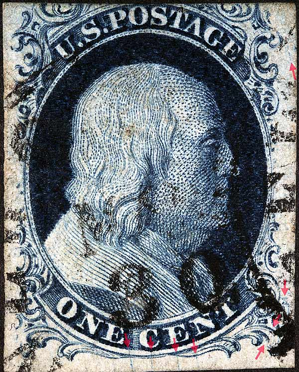
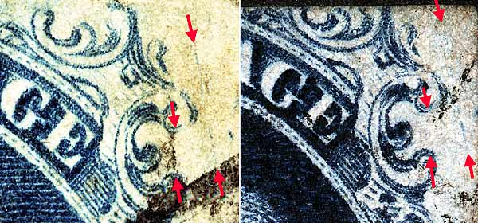
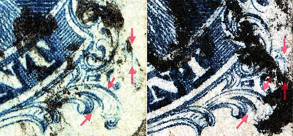
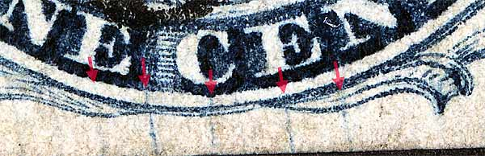

1¢ Franklin Issue of 1851-1857, PLATE 2 Pos 92R2, (Scott #7) |
| Scott #7 Blue, Type II, Relief B Issued both imperforate and perforated. Had this been an perforated copy then it would be Scott Number 20. |
|  |
| Figure 1. (BELOW) Unique scratch plating mark found only on 92R2 to the right of Ornament L/M as illustrated in the Neinken plating diagrams. The plating diagrams also illustrate a left leaning vertical scratch or line connecting the Acanthus scrolls of Ornaments L and M. On these two copies the line is not visible and cannot be confirmed here.
 |
| Figure 2. (BELOW) The blur plating mark as illustrated in the plating diagrams can be seen above the "candy cane" to the right of Ornament R. The blur is darker in the image of an earlier impression on the right. There is also a faint diagonal scratch of color, in the right plume remains, which is not illustrated in the plating diagrams but confirmed here as consistent.  |
| Figure 3. (BELOW) Early impressions will show surface cracks in the lower margin below the bottom curved line. Neinken postulates that as the plate wore, the evidence of the surface cracks fades away in the printing. The archives later impression seems to confirm this. These cracks are also found on Positions 93R2 to 96R2 in various configurations and can be an aid to confirming position.
 |
| DISCLAIMER and COPYRIGHT INFORMATION: Thanks for visiting this site. I hope you learn something new as we are making new discoveries all the time. You, the visitor, have my permission to link to my pages and to share the INFORMATION with others. The images themselves fall under the fair use guidelines established by the United States Congress and Copyright law. Basically contact us before using. I also ask in return that you send me an e-mail if I have made a mistake, or have made some other technical blunder that in my rush to put these pages up would cause the visitor confusion. Please also visit my other website at www.slingshotvenus.com. and support the live music arts. While your there, be sure to purchase our music. There are not many philatelic rock stars around and we need all the help we can get. :-) I can be reached at: nerdman@ix.netcom.com Update 9/21/06 |